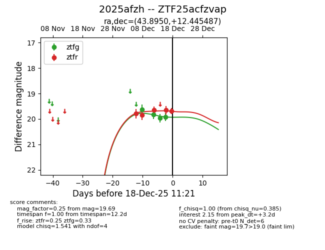
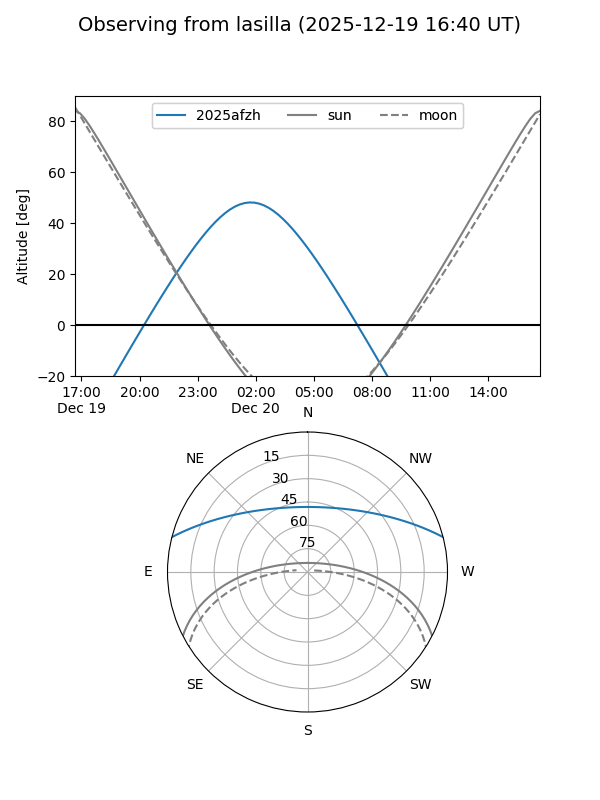
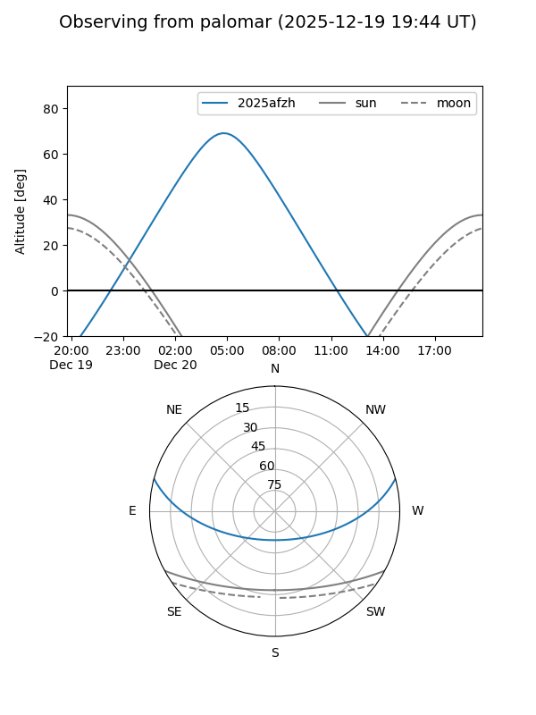
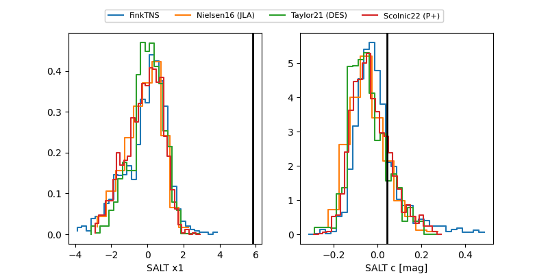

2025afzh
Target 2025afzh at 2025-12-20 05:34
Aliases and brokers:
FINK: fink-portal.org/ZTF25acfzvap
Lasair: lasair-ztf.lsst.ac.uk/objects/ZTF25acfzvap
ALeRCE: alerce.online/object/ZTF25acfzvap
TNS: wis-tns.org/object/2025afzh
YSE: ziggy.ucolick.org/yse/transient_detail/2025afzh
alt names
ZTF25acfzvap (ztf,fink_ztf)
2025afzh (tns,yse)
Coordinates:
equatorial (ra, dec) = 43.8950,+12.44549
equatorial (HMS+DMS) = 02:55:34.80,+12:26:43.75
galactic (l, b) = (164.2191,-40.27037)
Flags:
Photometry:
last ztfg=20.19, ztfr=20.00
6 ztfg, 6 ztfr detections
Lightcurve

Visibility


Additional plots
